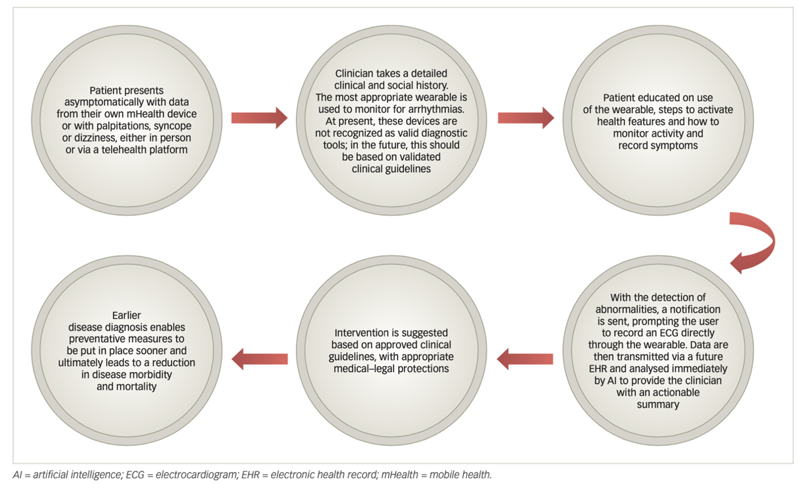

Atrial fibrillation (AF) is a prevalent cardiac arrhythmia associated with significant health risks. Wearable technologies have revolutionised the
detection of AF by enabling continuous monitoring and offering personalised healthcare solutions. However, their integration into healthcare raises
ethical concerns such as implementations of algorithmic bias in photoplethysmography (PPG) sensors, autonomy and informed consent in empowering patients
and the compromised data security collected. This essay concludes that inclusivity, transparency in data practices and robust data security measures
are crucial to ensure the ethical and effective adoption of these technologies in healthcare.
Introduction
Wearable technology provides innovative and cost-effective solutions for detecting AF, which is recognised as a global health challenge due to its rising
prevalence and life-threatening complications. (Kornej et al., 2020) AF is a type of cardiac arrhythmia that is difficult to detect and often asymptomatic
with high risks of ischemic strokes and myocardial infarction (Nemati et al., 2016). Traditionally, electrocardiogram (ECG) monitoring systems are used to
detect arrhythmias. The use of this is limited to the duration of the appointment, whereas wearable devices enable continuous monitoring that empowers
patients and healthcare providers (Duncker et al., 2021). Despite their transformative potential, integrating wearable technology and AI into healthcare
raises critical ethical concerns. This essay explores the extent of how which algorithmic bias, informed consent, and autonomy in the use of data and
data security impact the adoption of wearable technology into healthcare.
Algorthmic Bias and Discrimination
A significant concern in the use of wearable technologies is the potential for algorithmic bias, which can lead to discrimination against certain
racial and ethnic groups. Wearables that use PPG green light signalling sensors present a technical bias where its accuracy depletes when used for
people with darker skin tones. PPG relies on green light to detect biological signals beneath the skin, where skin tone affects the absorption of this light.
Green light is less able to penetrate deeper into the skin of individuals with darker pigmentation, leading to less accurate readings. Despite
products being advertised as suitable for all skin tones, they still exhibit bias and discrimination against individuals with darker skin tones.
This hinders the integrity of wearable devices as it reinforces racial disparities by not being accessible and accurate to all.
(Colvonen et al. (2020),(Merid and Volpe, 2023)). Crucially, this represents an ethical violation, as advances in wearable technology
should aim to improve healthcare access rather than exacerbate existing healthcare disparities.
Autonomy and infomed consent
Wearable technology collects a myriad of psychological data which makes informed consent crucial to protect user autonomy. Exercise is a critical
determinant of health and lack of physical activity can contribute to morbidity and mortality associated with AF (Semaan et al., 2020).
Patients can utilise wearable devices to monitor psychological parameters such as level of physical activity and heart rate to encourage behavioural change towards a
healthier lifestyle. This aligns with the principle of the quantified self, where users feel empowered to take an active role in their own health management,
and their autonomy is not limited. Promoting self-efficacy in this way supports a sustainable and innovative approach to healthcare: transitioning
medical management from the clinic to the home. This means that data collected by wearable devices can be used by both the patient and clinician to
monitor health conditions and implement personalised interventions (Figure 1). The clinician treating the patient must strictly adhere to
confidentiality protocols so that they don't commit medical malpractice and violate HIPAA (Rose, Kumar and Kass, 2023).
Following this provides an innovative, cost-effective solution as it results in less outpatient visits for monitoring and patient empowerment as
patients are more engaged with improving their health. (Duncker et al., 2021b) Figure 1
(Adasuriya and Haldar, 2022)

For the patient autonomy to not be undermined, it is crucial that there is transparency, with the patient fully aware of the data that is shared with the
clinician. By placing informed consent at the forefront of remote monitoring, wearable technology exemplifies a shift towards patient-centred healthcare
that prioritises autonomy and engagement.
Privacy and Data Security
The pervasiveness of data collection through wearable devices has led to concerns regarding the security of data and loss of privacy. Health data
is considered the most sensitive category of personal information. Its growing commercial value has led to misuse for purposes such as targeted
advertising, unlawful service acquisition and identity theft (Cilliers, 2019), Mone and Shakhlo, 2023)
Users may be unaware of the extent of data being collected, stored and shared. This is because privacy policies are lengthy, complex and profuse, that conceal details of data collection and usage.
Furthermore, data transmission of wearable devices compromises of wireless or Bluetooth technologies which are prone to modification as hackers can
tamper with the content of exchanged data packets or alter the timestamp of them (Cilliers, 2019) The absence of stringent security protocols and
encryption for data transmission and storage leaves users vulnerable to cyber-attacks and data breaches. Healthcare breaches "affecting 500 people or
more were reported to the US Office for Civil Rights of the Department of Health and Human Services (HHS)", as shown in the table below (note: data is
incomplete for 2023)(Mone and Shakhlo, 2023)
Figure 2
Pivotally, data integrity being compromised presents a major ethical concern as for patients that use wearable devices for monitoring of AF and for their
overall health. This is because their health is dependent on the security and accuracy of data and therefore breaches of privacy and misuse of information
could deter their adoption and undermine the benefits of this technology
Conclusion
Wearable technology is a transformative tool in the detection and management of AF. It provides a cost and time-effective solution as it focuses on placing
the patient at the forefront and allows for personalised interventions that were previously unattainable. However, ethical concerns including algorithmic bias,
data privacy and the need for informed consent, underscore the use of wearable technology. It is imperative that inclusivity, transparency and robust
data protection mechanisms should be in place to harness the full potential of wearable technology.
References
Nemati, S., Deen, M. J., & Mondal, T. (2016).
Monitoring and detecting atrial fibrillation using wearable technology.
[DOI: 10.1109/embc.2016.7591456].
Kornej, J., Börschel, C. S., Benjamin, E. J., & Schnabel, R. B. (2020).
Epidemiology of atrial fibrillation in the 21st century:
Novel methods and new insights.
*Circulation Research*, 127(1), 4–20.
[DOI: 10.1161/CIRCRESAHA.120.316340].
Cilliers, L. (2019).
Wearable devices in healthcare: Privacy and information security issues.
*Health Information Management Journal*, 48(2), 68–76.
[DOI: 10.1177/1833358319851684].
Duncker et al., 2021
'Smart Wearables for Cardiac Monitoring—Real-World Use beyond Atrial Fibrillation,' Sensors, 21(7), p. 2539.
[DOI: 10.3390/s21072539].
Adasuriya and Haldar,2022
'Remote monitoring of cardiac arrhythmias using wearable digital technology: paradigm shift or pipe dream?,
' European Journal of Arrhythmia & Electrophysiology, 8(1), p. 7. V
[DOI: 10.17925/ejae.2022.8.1.7 ].
Merid and Volpe, 2023
'Race correction and algorithmic bias in atrial fibrillation wearable technologies,' Health Equity, 7(1), pp. 817–824'Race correction and algorithmic bias in
atrial fibrillation wearable technologies,' Health Equity, 7(1), pp. 817–824
[DOI: 10.1089/heq.2023.0034 ].
Colvonen, P.J. et al. (2020) 'Limiting racial disparities and bias for wearable devices in health science research,' SLEEP, 43(10). Colvonen, P.J. et al. (2020)
'Limiting racial disparities and bias for wearable devices in health science research,' SLEEP, 43(10).
[DOI: 10.1093/sleep/zsaa159].
(Semaan et al., 2020).) 'Physical activity and atrial fibrillation: Data from wearable fitness trackers,' Heart Rhythm, 17(5), pp. 842–846. ) 'Physical activity
and atrial fibrillation: Data from wearable fitness trackers,' Heart Rhythm, 17(5), pp. 842–846.
[DOI: 10.1016/j.hrthm.2020.02.013].
Rose, R.V., Kumar, A. and Kass, J.S. (2023) 'Protecting privacy,' Neurologic Clinics, 41(3), pp. 513–522.
[DOI: 10.1016/j.ncl.2023.03.007].
Mone, V. and Shakhlo, F. (2023) 'Health Data on the Go: Navigating Privacy Concerns with Wearable Technologies,' Legal Information Management, 23(3),
pp. 179–188.
[DOI: 10.1017/s1472669623000427].